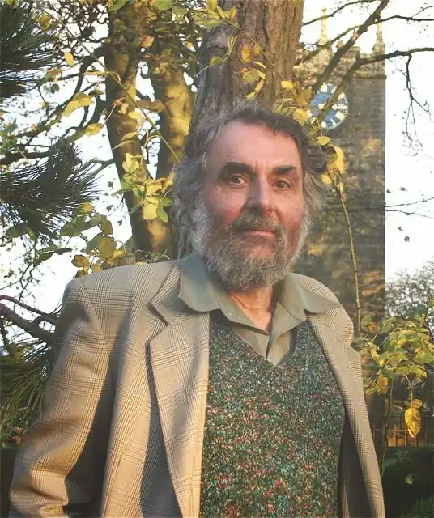

Ієн М. Емберсон (Ian M. Emberson) народився в Гоуві, у графстві Сассекс, 1936 року і з гордістю згадував, що був охрещений поетом Ендрю Янгом. Після багатьох переїздів він зустрів свою дружину Кетрін у 1988 році, а згодом оселився в Тодмордені, на самому кордоні Йоркширу, де провів багато щасливих років.
У 1986 році Ієн достроково вийшов на пенсію з посади музичного бібліотекаря Центральної бібліотеки Гаддерсфілда, щоб зосередитися на письменництві та мистецтві, і віддано займався цим до останнього дня свого життя. Він любив піші прогулянки й плавання та був довічним членом Товариств Ґаскелл і Бронте. Після нього залишилася донька Бет, яка мешкає у Франції.
Опублікованими є 12 його книжок, остання електронна книга "Зигзагоподібний шлях" (2010 р.). Автор п'єс, лібрето для опери, є пісні за його віршами. Помер 4 листопада 2013 року.